Contenido
1.1 Conceptos básicos sobre las estructuras
Definición
Las estructuras son conjuntos de elementos unidos entre sí capaces de soportar las fuerzas que actúan sobre ellas, conservando su forma.
Recordamos algunos conceptos básicos sobre las estructuras, que utilizaremos en esta unidad.
Cargas
Las fuerzas que actúan sobre las estructuras se denominan cargas o acciones.
Reacciones
Para que una estructura esté en equilibrio, la resultante de las fuerzas externas y la resultante de sus momentos deben ser nulas. Los apoyos y las uniones ejercen reacciones de acuerdo con los movimientos que restringen; su dirección y su valor se obtienen mediante las ecuaciones de equilibrio.
Esfuerzos
Al aplicar cargas sobre una estructura aparecen fuerzas y momentos internos en sus elementos. Sus resultantes se denominan esfuerzos internos. Los principales son:
| Esfuerzo | Efecto y Descripción | Esquema | Ejemplos |
|---|---|---|---|
| Tracción | Estirar. Dos fuerzas opuestas tiran del elemento para alargarlo. |
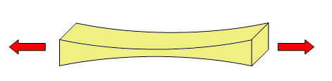 |
Cadenas de columpio, cables de grúa. |
| Compresión | Comprimir. Dos fuerzas opuestas aplastan el elemento para acortarlo. |
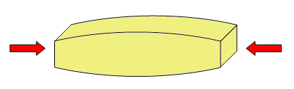 |
Patas de silla, columnas, pilares. |
| Flexión | Doblar. Las fuerzas tienden a curvar el elemento. |
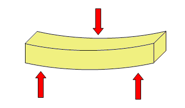 |
Tablero de mesa, vigas de suelo, estanterías. |
| Torsión | Retorcer. Las fuerzas giran en sentidos opuestos sobre el eje. |
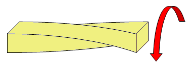 |
Eje de destornillador, llave al girar, grifos. |
| Cortante | Cortar/Cizallar. Dos fuerzas paralelas y opuestas muy próximas. |
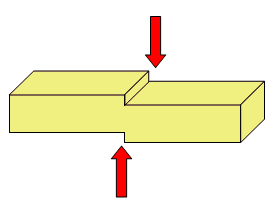 |
Tijeras, guillotina, sujeción de cuadros. |
Condiciones a cumplir por las estructuras
Conviene separar cuatro ideas que no significan lo mismo:
- Equilibrio: la resultante de fuerzas y de momentos es nula; el cuerpo no tiene aceleración de traslación ni de giro.
- Resistencia: los elementos no superan su capacidad y no se rompen.
- Rigidez: las deformaciones permanecen dentro de límites admisibles.
- Estabilidad: la estructura no pierde su configuración resistente. En un cuerpo simplemente apoyado, que la proyección del centro de gravedad quede dentro de la base es un modelo simplificado frente al vuelco, no un criterio universal: anclajes, tirantes y empotramientos pueden aportar reacciones y momentos estabilizadores.
Importante: Triangulación
Esto se consigue cuando la forma de las estructuras es adecuada, soldando las uniones para reforzarlas y con triangulaciones, ya que el triángulo es el único polígono indeformable. Es por ello que son las formas más empleadas en las estructuras.
Las diagonales usadas para triangular se llaman arriostramientos.
Aún así, toda estructura tiene que tener cierto grado de flexibilidad, ya que tienen que ser capaces de soportar las variaciones debidas a la dilatación y a la contracción de materiales, así como de absorber vibraciones y movimientos sísmicos.
Ideas esenciales
No memorices un catálogo. Reconoce la función resistente de estos cuatro elementos:
- Pilar: elemento vertical que transmite cargas, principalmente por compresión.
- Viga: elemento normalmente horizontal que trabaja sobre todo a flexión y cortante.
- Pórtico: conjunto resistente formado por pilares y vigas.
- Cercha: conjunto triangulado de barras que transmite las cargas principalmente mediante esfuerzos axiles.
Otros elementos estructurales
1.2 Elementos resistentes en edificación
Las estructuras de edificación se componen de lo que denominamos elementos resistentes, que se pueden clasificar en:
Cimientos o cimentación
Conjunto de elementos estructurales cuya misión es transmitir las cargas de la edificación o de elementos apoyados en éste al suelo, distribuyéndolas de forma que no superen una serie de valores máximos del terreno de apoyo.
Debido a que la resistencia del suelo es, generalmente, menor que la de los pilares o muros que soportará, el área de contacto entre el suelo y la cimentación será mucho más grande que los elementos soportados (zapatas).
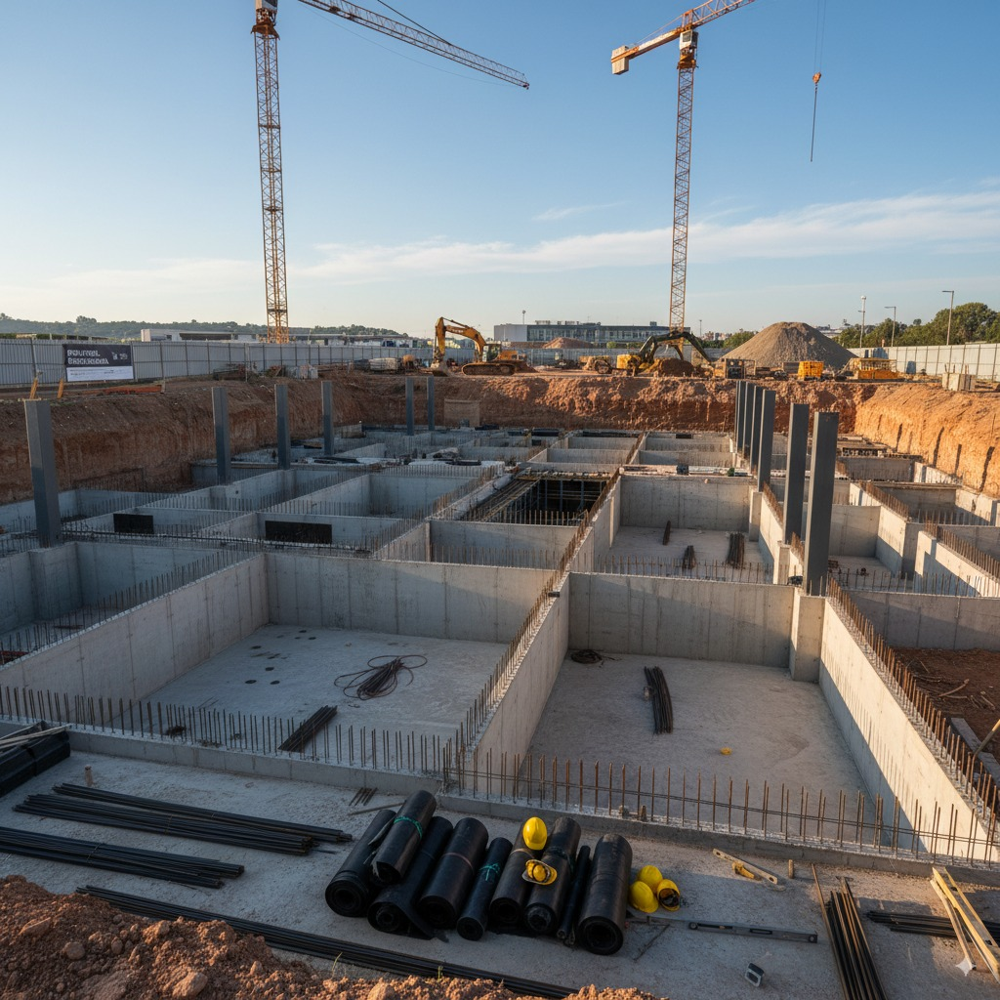
Soportes
Elementos verticales que trabajan fundamentalmente a compresión, aunque también pueden soportar cortante y flexión. En elementos esbeltos debe comprobarse el pandeo, que es un modo de inestabilidad de una pieza comprimida, no un esfuerzo interno.
- Pilares: son habitualmente de hormigón armado, normalmente ejecutados “in situ” (encofrado). También pueden ser de acero.
- Pie derecho: soporte de madera.
- Columna: soporte de sección circular.
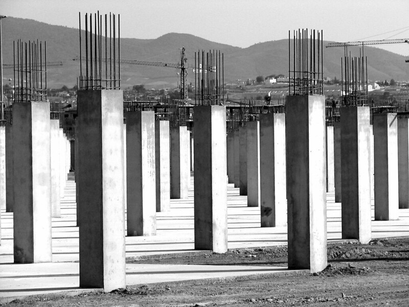
Muros de carga o portantes
Se trata de paredes de una edificación que poseen función estructural, es decir, aquellas que soportan otros elementos estructurales del edificio, como arcos, bóvedas, vigas o viguetas de forjados o de la cubierta.
Soportan fundamentalmente esfuerzos axiles de compresión. Cuando soportan cargas horizontales (presiones del terreno) se denominan muros de contención.
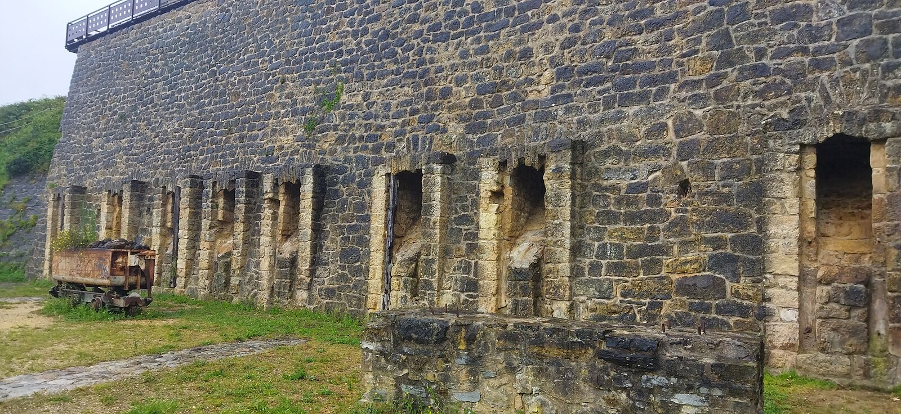
Vigas
Elemento estructural que normalmente se coloca en posición horizontal destinado a soportar esfuerzos principalmente de flexión y de cortante.
Las vigas que forman parte de un forjado se denominan viguetas. El conjunto vigas-pilares forma lo que denominan pórticos.
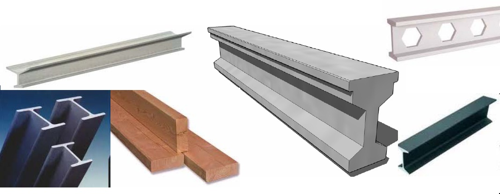
Cerchas
Una cercha es una celosía, una estructura reticular de barras rectas interconectadas en nodos formando triángulos planos (en celosías planas) o pirámides tridimensionales (en celosías espaciales). También se les conoce como armaduras.
El interés de este tipo de estructuras es que las barras trabajan predominantemente a compresión y tracción, presentando comparativamente flexiones pequeñas.
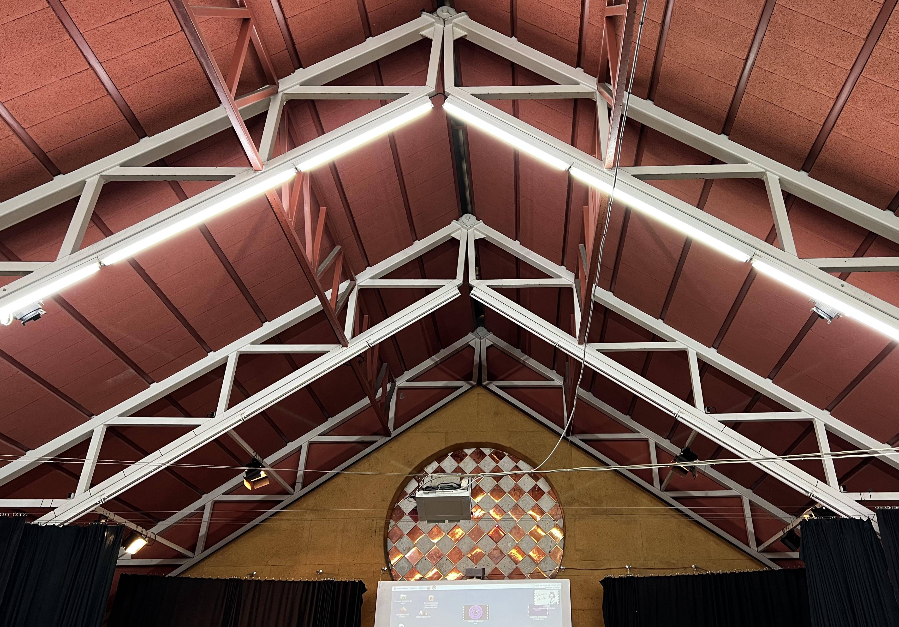
Forjados
Se denomina forjado al elemento estructural, horizontal o inclinado (en cubiertas), que soporta su propio peso y las sobrecargas de uso, tabiquería, dinámicas, etc. Transmite cargas verticales y horizontales, aportando rigidez.
Un tipo muy habitual es el forjado de viguetas y bovedillas, cuya construcción se detalla en el recurso adjunto.
Tirantes
Se usan para unir dos elementos de una estructura o una estructura al terreno. Su principal característica es que trabajan siempre a tracción y no soportan ningún otro esfuerzo.
Se fabrican habitualmente de acero, dada su excelente resistencia a la tracción.
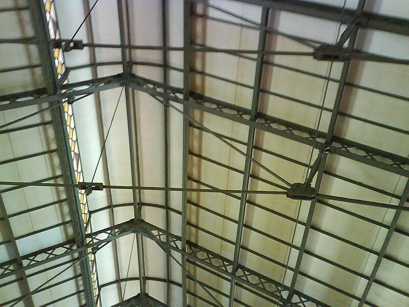
Arcos, bóvedas y cúpulas
Arco: Elemento curvo que salva el espacio entre dos pilares. Trabaja predominantemente a compresión, transmitiendo cargas oblicuas (empuje) a los apoyos.
Bóveda: Elemento superficial generado por el movimiento de un arco a lo largo de un eje. Cubre espacios entre muros o pilares trabajando a compresión.
Cúpula: Elemento para cubrir un espacio circular o poligonal mediante arcos rotados respecto a un punto central. Los meridianos trabajan siempre a compresión. Los paralelos comprimen en la parte alta de la cúpula y traccionan en la parte baja: por eso se coloca un zuncho en la base, que absorbe esa tracción.
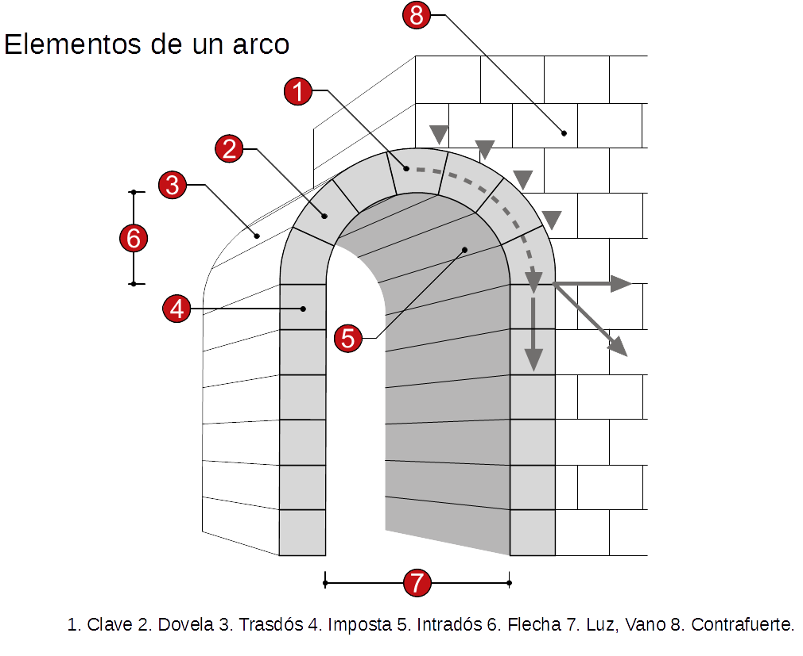
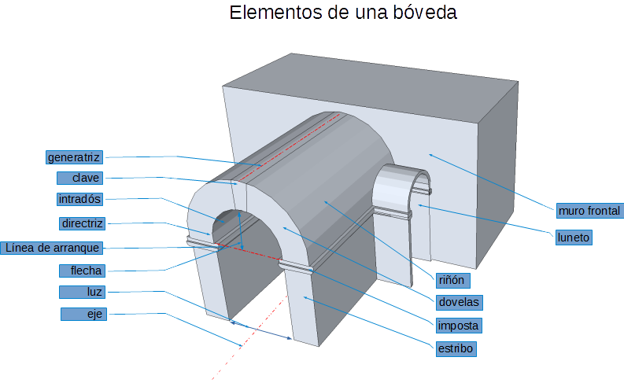
Dinteles
Es el elemento superior que permite crear vanos en los muros para conformar puertas y ventanas. La construcción que utiliza dinteles se llama adintelada.
A diferencia de los arcos, trabaja fundamentalmente a flexión, por lo que requiere materiales resistentes a la tracción.
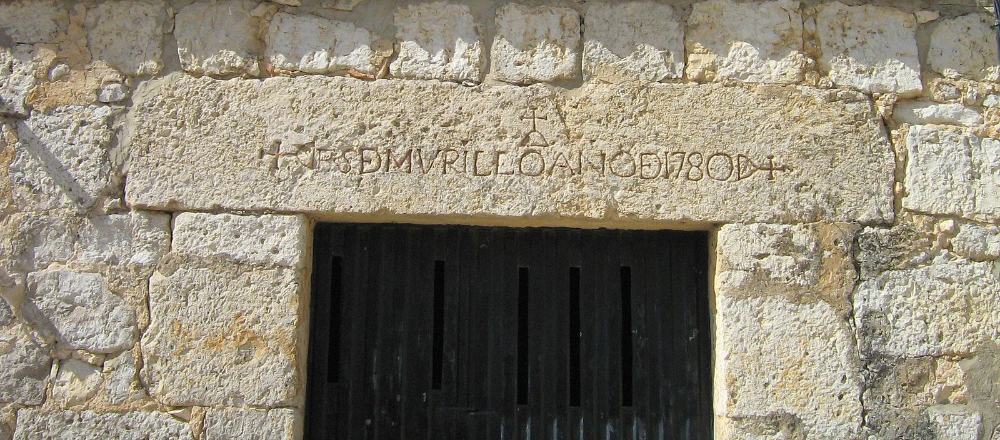
1.3 Elementos resistentes en maquinaria
Chasis y Bastidor
El chasis es el armazón metálico que soporta los elementos de un vehículo (motor, carrocería).
El bastidor es la parte más importante del chasis. Es una estructura compuesta por largueros y travesaños donde se fijan los elementos mecánicos.
En los turismos modernos ha sido sustituido por carrocerías monocasco, integrando bastidor y carrocería en una única estructura.
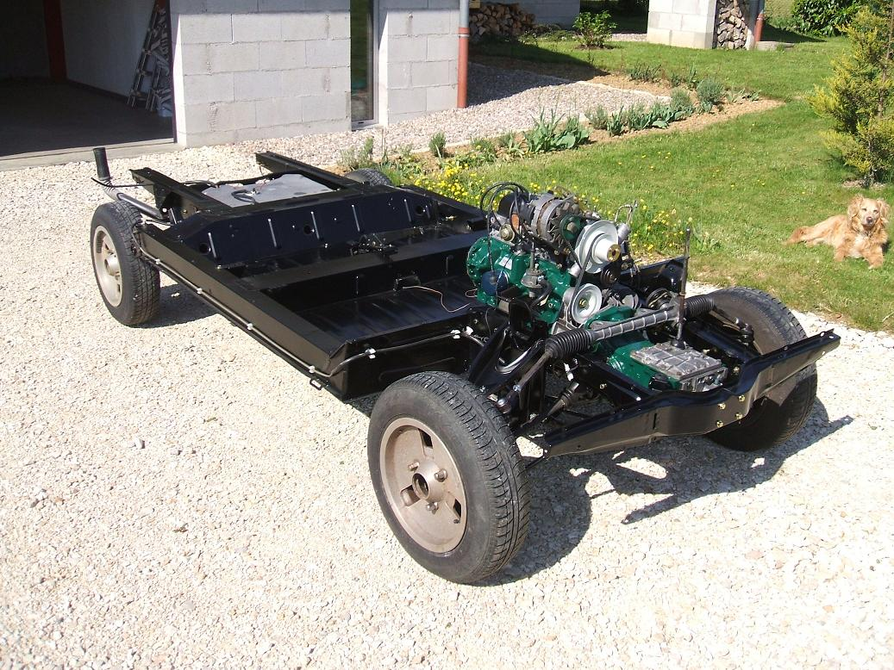
Bancada
Es la estructura de una máquina herramienta, sobre la que se construye ésta.
Sus principales funciones son soportar vibraciones y movimientos, mantener la precisión en el mecanizado de piezas y alojar los mecanismos.
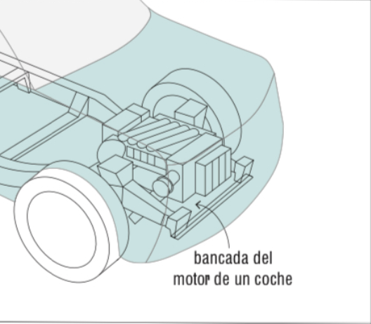